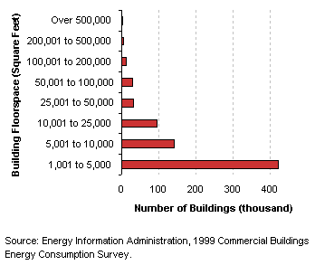
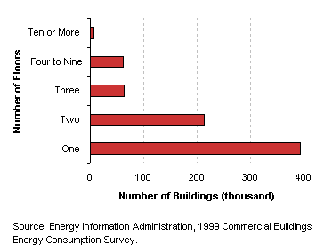
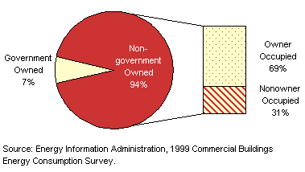
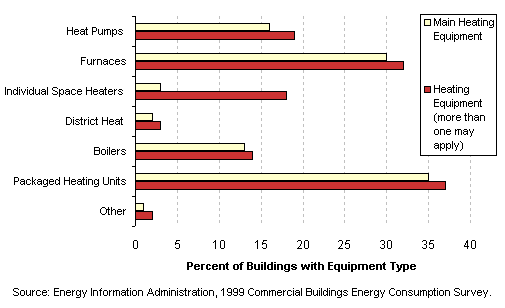
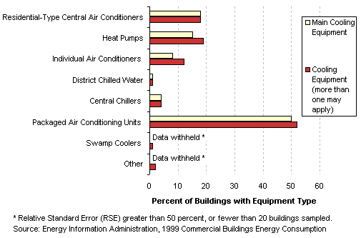
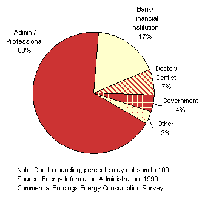
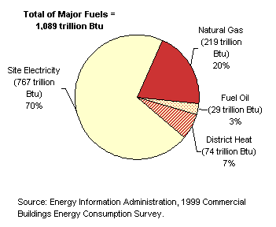

| |
|
Characteristics
by Activity...
Office |
Office
buildings are those used for general office space, professional offices,
and administrative offices.
Basic Characteristics
[ See also: Equipment | Activity
Subcategories | Energy Use
]
|
Office
Buildings...
- Despite the fact that the average size of office
buildings was 16,300 square feet, the majority of office buildings
were between 1,001 and 5,000 square feet (the median office building
size was 4,500 square feet).
- Most office buildings were not skyscrapers, or
even tall buildings at all: 53 percent of office buildings had
only one floor and 82 percent have one or two floors.
- Most office buildings were not government owned.
Tables:
Top
|
|
Number
of Office Buildings by Building Size Category

Number
of Office Buildings by Number of Floors Category

Ownership
of Office Buildings

|
Equipment
Table: Buildings,
Size, and Age Data by Equipment Types
Heating
Equipment in Office Buildings

Cooling
Equipment in Office Buildings

Computers
and Photocopiers in Office Buildings
Top
Activity
Subcategories
|
Building
respondents who reported that their building was an office building
were then asked to place the building into the following more specific
office categories:
- a bank or
other financial institution
- a doctor's
or dentist's office
- a government
office
- an administrative
or professional office building
- a research
and development building
- some other
type of office
|
|
Office
Buildings by Subcategory
 |
There were enough buildings in the responding sample to report statistics
for all of these types except for research and development, which has been
combined into the other type of office building. Another example of an other
type of office building that was found in the sample is a church office.
Multi-use office buildings were included in the administrative/professional
category.
Table:
Selected
Data by Type of Office Building
Top
Energy
Use
Office
buildings used 1,089 trillion Btu of total energy, which was 19 percent
of total energy consumption for all commercial buildings—the
highest total energy consumption of all commercial building types.
Since they comprised 18 percent of commercial floorspace, this means
that their total energy intensity was just slightly above average.
|
| Office buildings predominantly
used electricity as an energy source, accounting for 25 percent
of all commercial electricity use. They were one of the few building
types to use a significant amount of district heat.
Tables:
Reference:
What is a Btu? |
|
Energy Consumption in Office Buildings by Energy Source

|
The
total energy consumption data in the figures and tables above are “site
energy,” which includes only the amount of electricity consumed
within the building; energy use can also be expressed as “primary
energy,” which includes the energy consumed during the generation
and transmission of electricity.
Office buildings
used 2,314 trillion Btu of primary electricity, so their total primary
energy consumption was 2,637 trillion Btu, or 22 percent of total primary
consumption for all commercial buildings.
Top
Specific questions may be directed to:
Joelle Michaels
joelle.michaels@eia.doe.gov
CBECS Manager
Release date: July 24, 2002
Page last modified:
May 4, 2009 2:52 PM
http://www.eia.gov/consumption/commercial/data/archive/cbecs/pba99/office/office.html
If you are having any technical problems with this
site, please contact the EIA webmaster at wmaster@eia.doe.gov. |